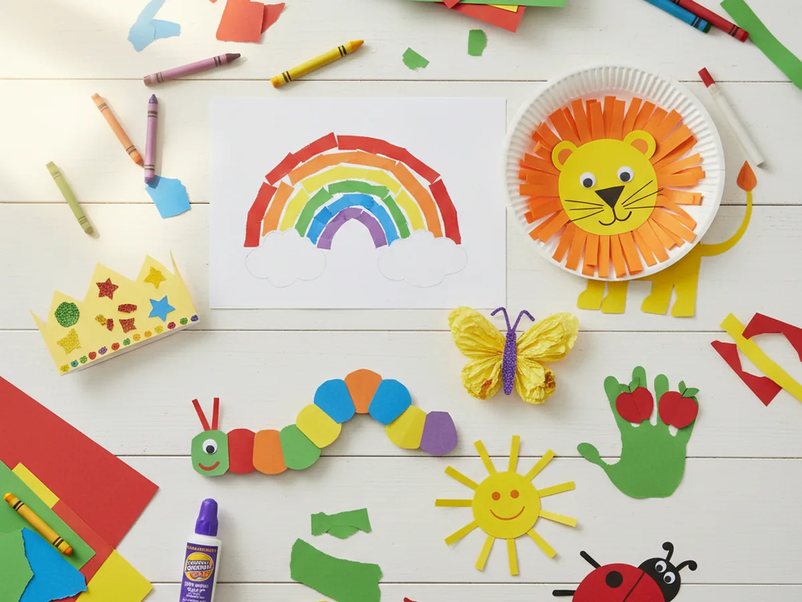
If your little one is somewhere between two and five, you already know how much they love working with their hands. These preschool paper crafts are designed exactly for that age, with simple shapes, big motions, and very forgiving steps that even tiny fingers can manage. Every idea on this list uses basic supplies, takes very little prep, and leaves you with something cute enough to display on the fridge. 🎨
The best part is that preschool paper crafts almost always end with a proud little smile and a hug. You do not need to be artistic, you do not need a Pinterest-worthy table, and you do not need a long stretch of free time. Just pick one idea below, set out a few supplies, and let the afternoon turn into one of those sweet, gentle memories you will both treasure.
What You'll Need
Most of these preschool paper crafts use the same handful of supplies, so one quick check of your craft drawer covers nearly the whole list.
- Crayola Construction Paper, a big bulk pack of bright colors that lasts for months of crafting.
- Fiskars Blunt-Tip Kid Scissors, blunt tips and small handles that fit little hands safely.
- Elmer's Disappearing Purple Glue Sticks, washable and easy for kids to see where they have applied glue.
- Crayola Washable Broad Line Markers, bright colors that wash off little hands and clothes with ease.
- Crayola Washable Crayons, perfect for toddlers who are still learning their grip.
- Self-Adhesive Googly Eyes, an instant way to bring any animal craft to life.
- Assorted Tissue Paper, soft and colorful for crinkle, tear, and layering crafts.
- A roll of tape, for projects that need a little extra hold.
20 Easy Preschool Paper Craft Ideas
1. Torn Paper Rainbow Collage
This is one of those preschool paper crafts that feels almost magical for a small child, because tearing is the whole craft. Hand your little one strips of red, orange, yellow, green, blue, and purple paper, then show them how to tear the strips into smaller pieces. Glue the colored pieces in arched rows on a white sheet to form a cheerful rainbow. The torn edges give the rainbow a soft, painterly look that toddlers love. 🌈
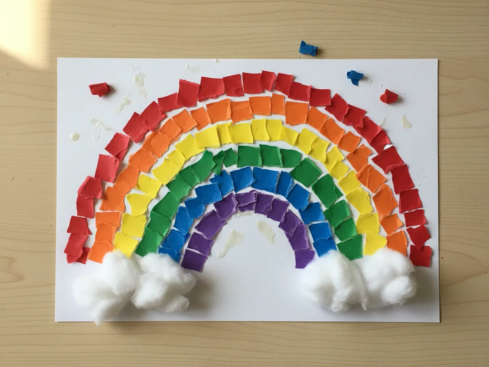
2. Paper Plate Lion
Paint or color a regular paper plate yellow, then glue strips of orange and yellow paper around the edge for a cheerful mane. Add two googly eyes, a small black nose, and a few marker whiskers to bring the lion to life. This is a wonderful introduction to layering shapes, and the bold result feels like a real animal portrait the moment it is finished. Display it on the bedroom door for a roaring welcome.
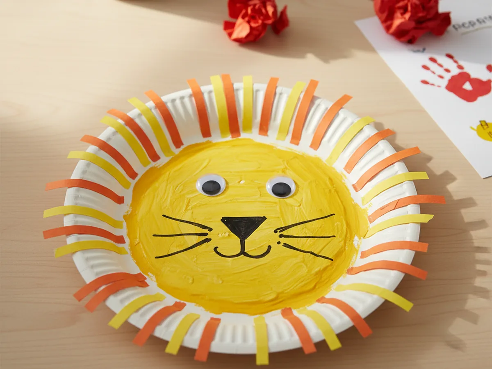
3. Paper Strip Caterpillar
Cut several thin paper strips in different colors and roll each one into a small loop, taping the ends. Glue the loops in a row to form a long, wiggly caterpillar body. Add a slightly bigger loop at the front for the head, two googly eyes, and two thin antenna strips. This is a perfect first project for tiny crafters because each loop feels like a small win along the way.
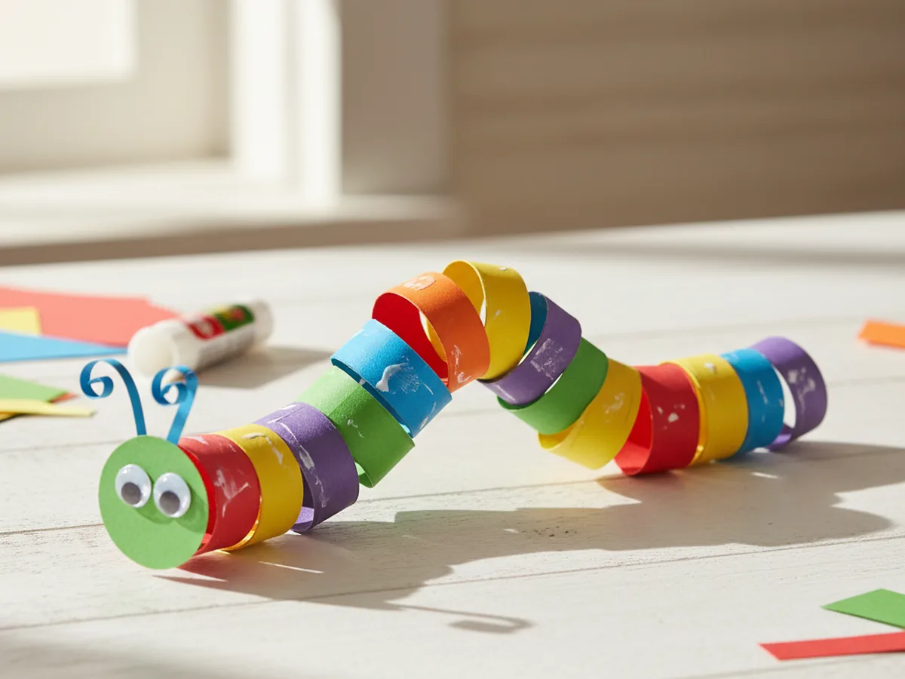
4. Easy Paper Crown
Cut a long strip of bright construction paper, snip a row of triangle points along the top edge, and tape the ends together to fit your child's head. Let them decorate the crown with marker drawings, sticker dots, and small paper jewels. Most preschoolers will not take the crown off for the rest of the afternoon. It is one of those preschool paper crafts that sparks an entire pretend-play story.
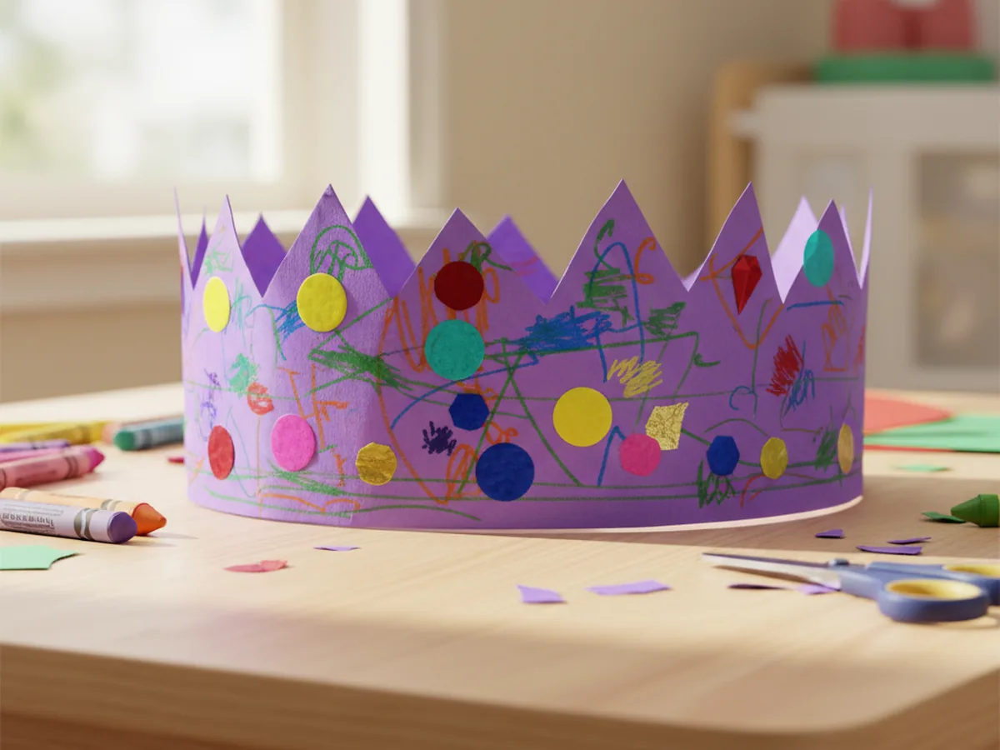
5. Paper Bag Puppet
A plain brown paper lunch bag becomes the perfect base for a hand puppet your child can use again and again. Glue paper shapes onto the flap to make a face, add googly eyes and a paper mouth, and let your child name their new puppet friend. Once it dries, slip your hand inside and watch it come to life. Puppet shows are an instant hit and almost always end in giggles.
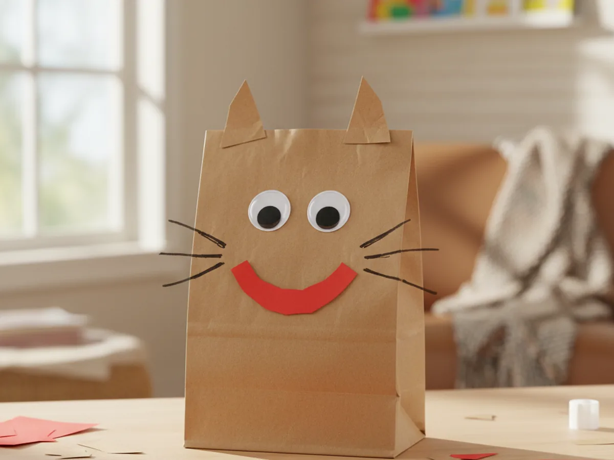
6. Construction Paper Flower Garden
Cut simple flower shapes from bright construction paper and glue them onto a green strip stem with rounded leaf cutouts. Make several flowers and arrange them in a row to create a happy little garden scene. This is a beautiful chance to talk about colors, shapes, and how flowers grow. Hang the finished garden across a window or above your child's bed.
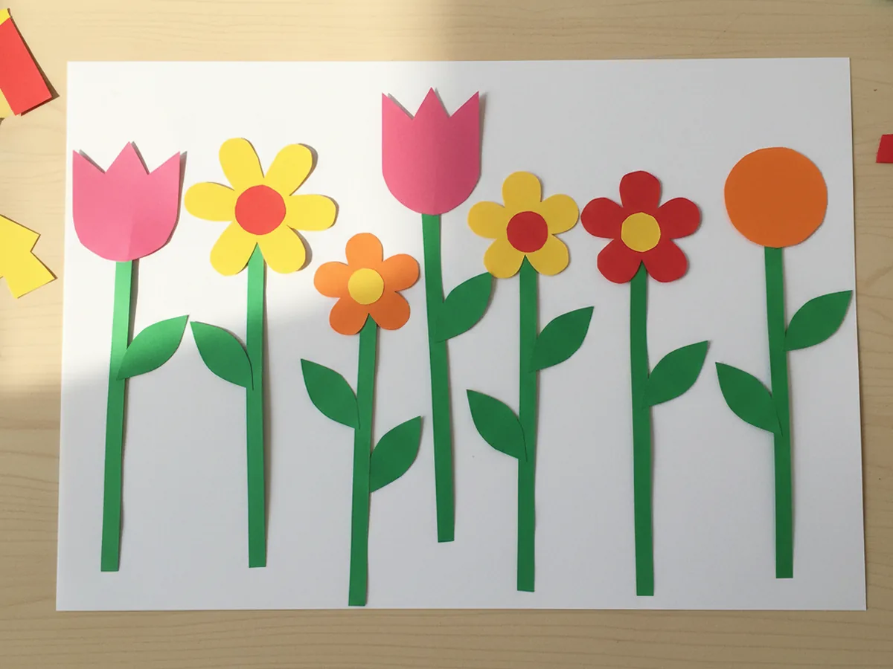
7. Paper Heart Bouquet
Fold small squares of pink, red, and white paper in half, draw half a heart shape, and cut along the line to reveal a perfect heart when unfolded. Glue several hearts onto green paper stems and tie them together with a ribbon. These sweet bouquets make adorable gifts for grandparents, teachers, or just because. They are also a beautiful way to introduce the simple symmetry of a folded heart.
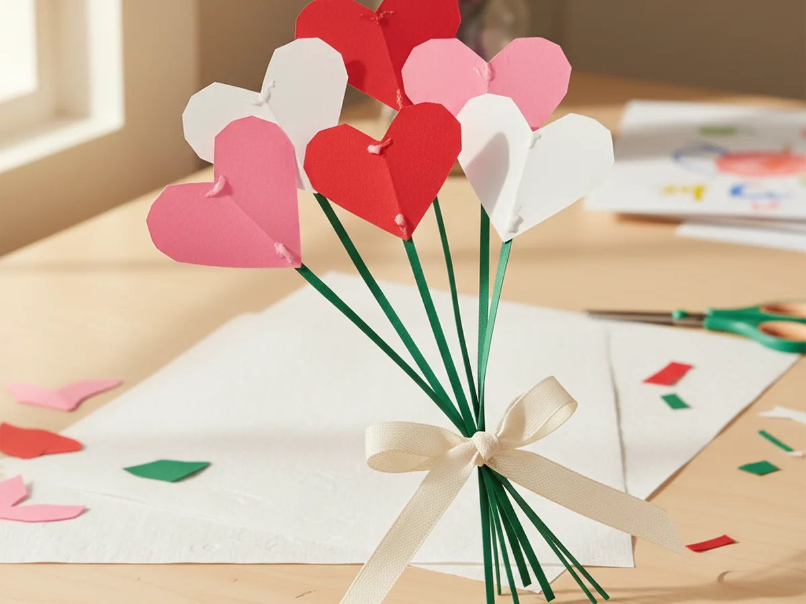
8. Paper Strip Sun
Cut a large yellow circle and several thin yellow and orange strips. Glue the strips around the back of the circle so they fan out like rays. Add a smiling face with markers in the center, and you have a cheerful sun your child will be proud of. Tape it to a window so the sunshine you made together greets you every morning. ☀️
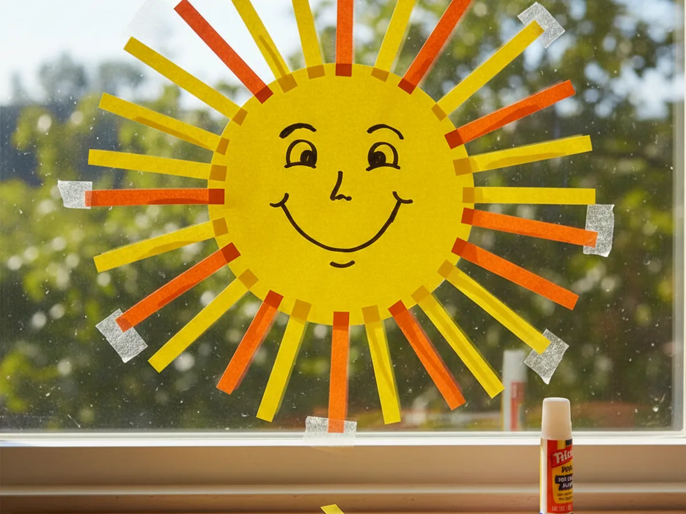
9. Tissue Paper Butterfly
Pinch the center of a square of bright tissue paper and twist a pipe cleaner around the middle to form butterfly wings. Curl the two ends of the pipe cleaner upward to make antennae. The colors of the tissue paper catch the light beautifully, and the soft texture is so satisfying for little hands to crinkle and shape. Hang the finished butterfly with thread for an easy bedroom decoration.
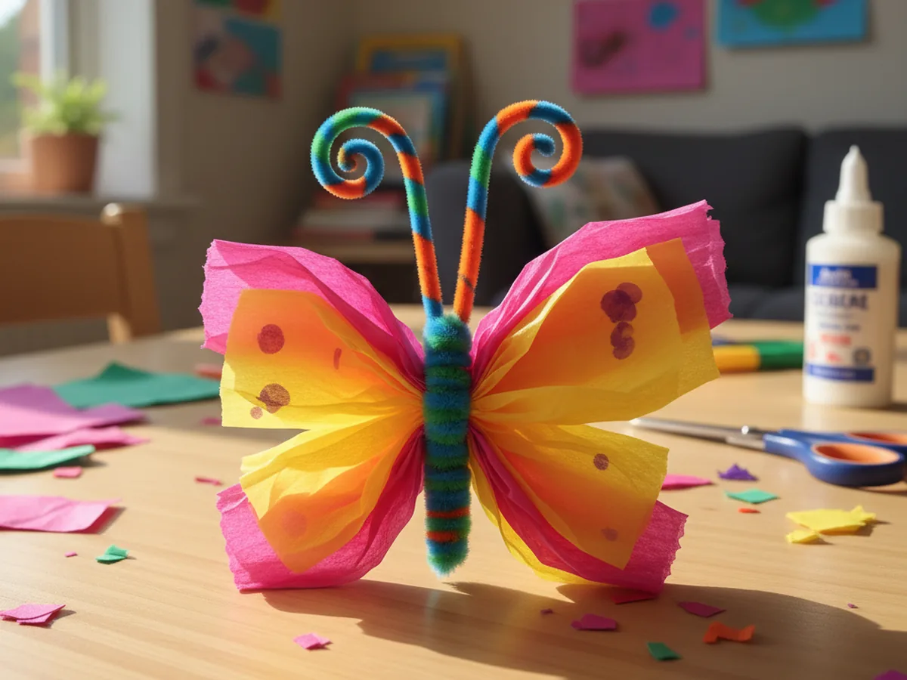
10. Paper Apple Tree
Trace your child's hand and forearm on brown paper to make a tree trunk and branches. Glue this onto a white sheet, then have your child press their fingertip into red paint or stick small red paper circles onto the branches as apples. The personal hand-shaped trunk makes this craft a meaningful keepsake. Date the back so you can look at it in a few years and remember how tiny the hand once was.
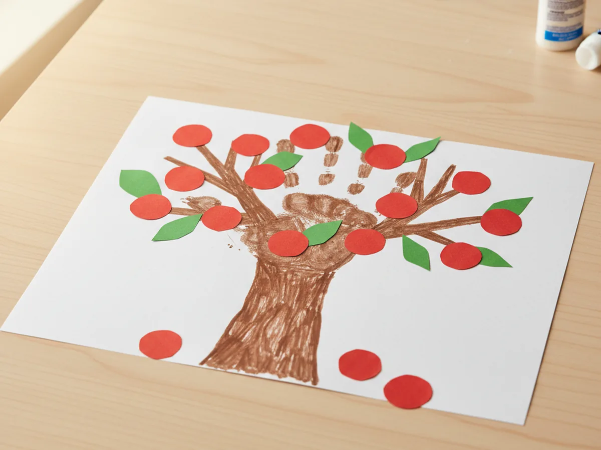
11. Cotton Ball Paper Sheep
Cut an oval body shape from black paper, glue four black rectangle legs and a round face at one end, then let your child cover the body with cotton balls for fluffy wool. Add two googly eyes and a pink paper triangle nose. The result is unbelievably cute, and the soft texture makes this one of those preschool paper crafts kids want to pat. A small farm scene with several sheep makes a sweet bedroom display.
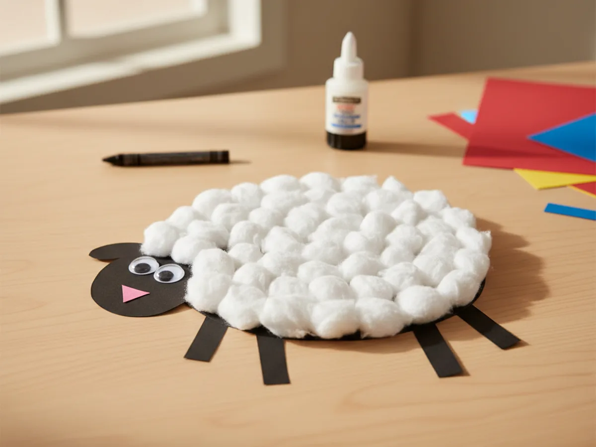
12. Paper Pinwheel
Cut a square sheet of paper, make four diagonal cuts from each corner toward the center, and fold every other point into the middle. Push a small brad through the center into the eraser of a pencil so the pinwheel can spin. Take it outside and watch your child run circles around the yard, giggling as it twirls in the breeze. The first time it spins is always pure magic.
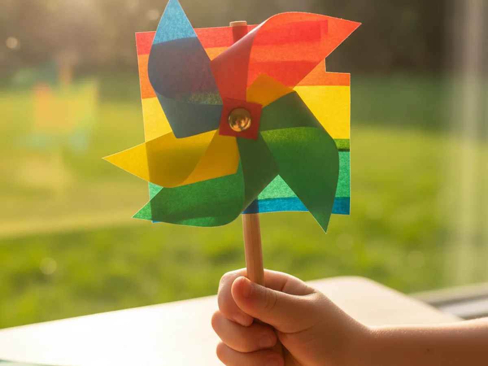
13. Paper Snake
Draw a large spiral on a round piece of paper, cut along the line from the outside edge inward, and decorate the snake with marker stripes, dots, and zigzags. Add a googly eye at the head end and a small red paper tongue. When you lift the head, the body uncoils and dangles below for a wiggly hanging snake. Most preschoolers will want to make a whole family of them.
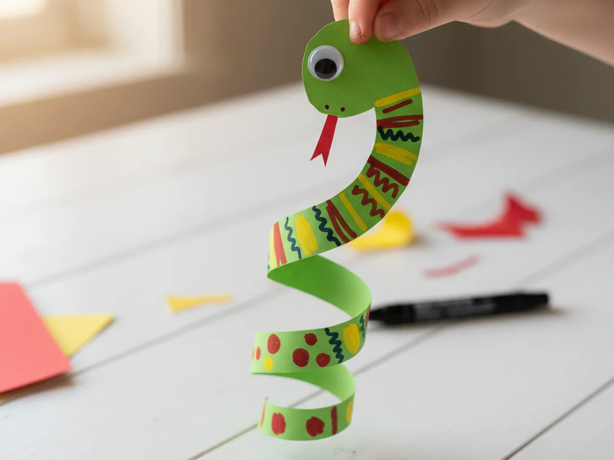
14. Paper Rocket
Roll a rectangle of construction paper into a tube and tape the seam. Form a small cone from a cut circle for the nose and tape it on top. Add three or four triangle fins around the base, then decorate the rocket with star and planet stickers. Pretend countdowns and zooming around the living room are guaranteed once the rocket is finished.
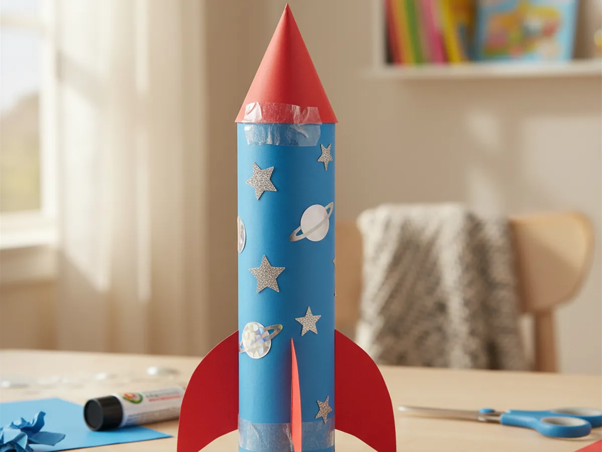
15. Paper Boat
The classic paper boat is one of those preschool paper crafts every child should learn at least once. Help your little one fold a sheet of paper following the simple sequence, and watch their face light up when the small boat appears at the end. Float the finished boat in the kitchen sink, the bath, or a shallow tub for instant water-play fun. Make a few in different colors to race them.
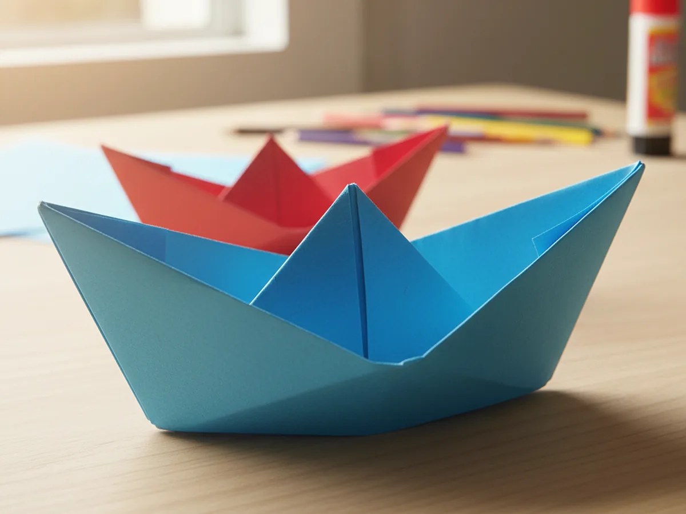
16. Paper Fish with Scales
Cut a simple fish shape from any color of construction paper, then glue overlapping circles or teardrops in alternating colors to form bright scales along the body. Add a googly eye near the mouth and a tail flipped to one side. The repetition of laying down scales is wonderfully calming, and the finished fish looks shiny and detailed. A row of these makes a sweet underwater scene.
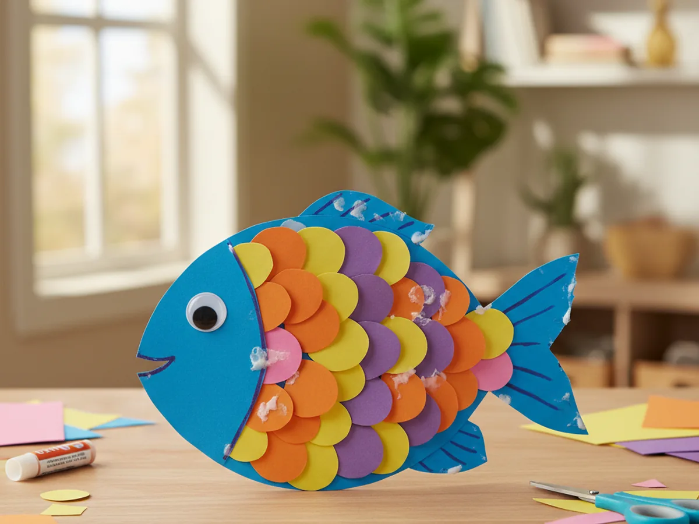
17. Paper Frog
Fold a green square of paper in half, cut to form a wide mouth and two folded leg shapes underneath. Glue two googly eyes on top and add a small red paper tongue peeking out of the mouth. Push the back gently and the frog hops a tiny bit, which is endlessly entertaining for preschoolers. Make a small lily pad from a green oval cut to set him on for display.
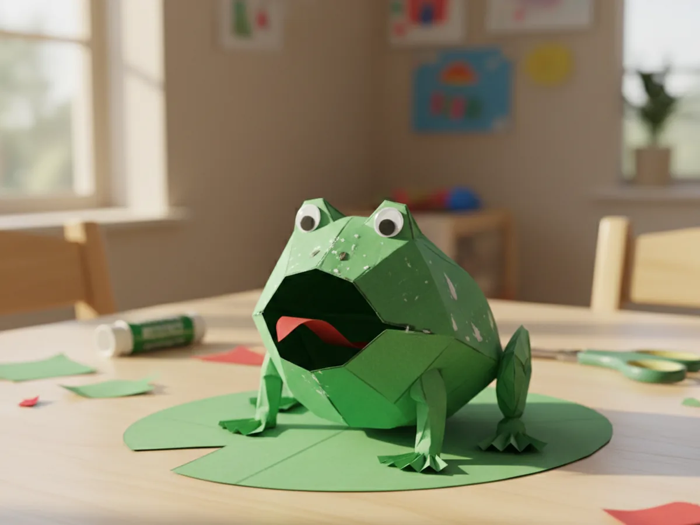
18. Paper Owl
Cut a teardrop body shape from brown construction paper, two large white eye circles with small black pupil dots, a yellow triangle beak, and two oval wings. Glue everything onto the body to assemble your owl friend. Set the owl on a small folded paper tab so it stands upright on a shelf. The big-eyed face always gets a happy reaction from young children.
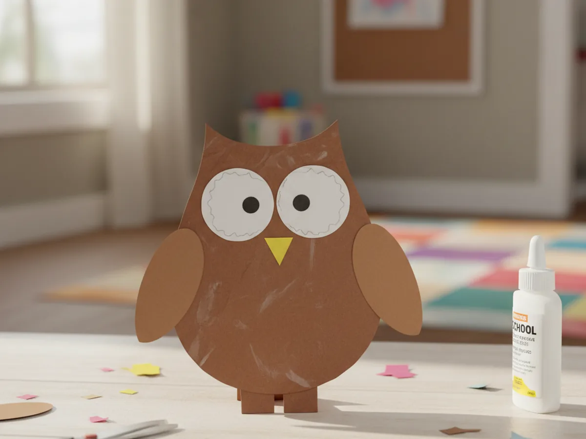
19. Paper Snowflake
Fold a square of white paper into quarters, then once more diagonally to make a small triangle. Snip small notches and curves along the edges, then unfold for a one-of-a-kind snowflake every time. Younger preschoolers will need help with the cutting, but the surprise of seeing the unfolded snowflake never gets old. Tape several to a window for an instant winter scene.
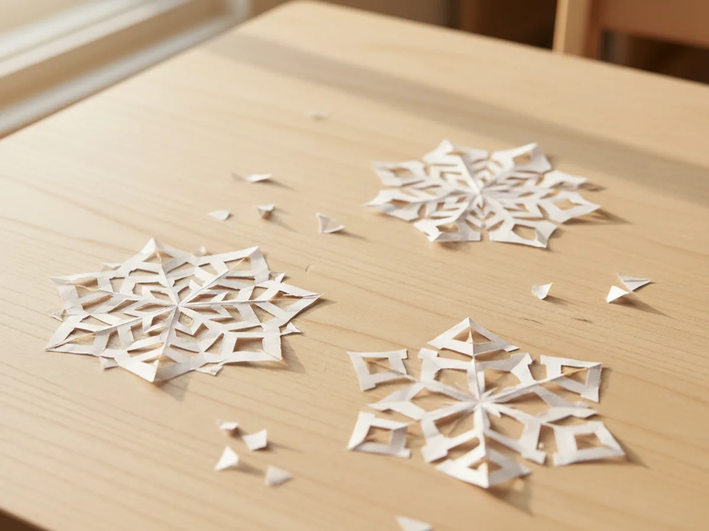
20. Paper Ladybug
Cut a red paper circle for the body and a smaller black half-circle for the head. Add black dot circles across the red body, two googly eyes, and two thin antenna strips on the head. The bold red and black colors are instantly recognizable and feel so satisfying for preschoolers to assemble. A whole row of paper ladybugs looks adorable on a green paper leaf.
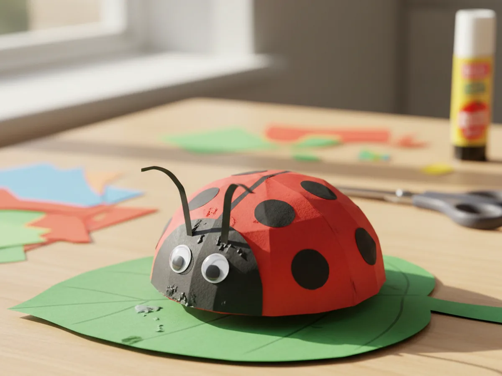
Final Thoughts
The very best part of any of these preschool paper crafts is not the finished little owl or the perfectly placed scales on the paper fish. It is the way your child looks up at you when they realize you are right there beside them, gluing and laughing and being silly together. Pick the idea that excites your little one most today, set out a handful of supplies, and let the rest unfold naturally. 🌟
Even one of these preschool paper crafts can turn an ordinary afternoon into a memory you will both keep. Do not aim for perfect, just aim for fun together.
More Crafts You'll Love
If you enjoyed these ideas, here are two more lovely paper craft collections to explore with your little one.
Happy crafting, and enjoy every sweet, sticky, colorful minute of it. ✂️